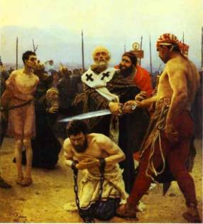

The Legend of the Three Generals – Part 1
Emperor Constantine is faced with a revolt in Phrygia, southeast of Constantinople, which contains a mixture of ethnic groups known as the Taiphalis. He sends three generals – Herpylion, Nepotianus and Ursus – and their troops by ship to the Phrygia region to quell it.
According to the legend, storms force the
expeditionary army to stop over in Andriake, the port of Myra. With time on
their hands, the troops first go into the port and then into Myra itself,
originally just to buy bread and other provisions. Arguments with merchants in
Myra’s marketplace soon lead to fighting between the soldiers and the local
populace. This quickly escalates into looting, destruction and general
rampaging.
Aware of this danger, Bishop Nicholas hurries to the three generals who have remained on the waterfront. He asks them, “Who are your Excellencies, and what is your mission?”
The generals answer: “We are servants of the Emperor
as well as of Your Saintliness. By order of the Emperor we’re on our way to
subdue the Taiphalis. They’re in revolt, but bad weather has forced us to stop
over here until we can continue our voyage.”
To this Nicholas responds: “You say that the Emperor
has instructed you to quiet unrest. How is it, then, that you create trouble in
our peaceful town?” The generals, unaware of their own troops’ undisciplined
actions, ask, “Who is it that is causing trouble, our Lord Saint?” Nicholas
replies: “It’s you, because you have permitted your soldiers to loot
the public market. The fault is yours!”
Hearing this, the generals rush to Myra’s marketplace
where, finding the report to be true, they beat some of the soldiers and shout
at others to restore order.
While the soldiers join the townsfolk in repairing
the damage, Nicholas invites the three generals to join him for dinner at the
church.
The Vita di
Stratilati adds:
“Like a good father, having advised and blessed them, he sent them on their journey. They were happy and pleased, and the Saint walked with them until Andriake, the port of Myra.”
Soon a second crisis arises, and Nicholas is once
more called upon to prevent injustice.
The generals are about to board their ships with their soldiers, ready to depart, and the Saint is ready to return to Myra, when he sees a group of weeping men and women.
The provincial prefect is one Eustathius, a corrupt
official, willing to sentence and execute innocent men and women if bribed by
their enemies. That – according to the people whom Nicholas encounters – is
about to happen.
“Lord, if you had been there, they would not be
putting three innocent men to death. The judge has arrested them and ordered
their heads to be cut off.”
The beheading is about to take place in the center of town. As news of the event spreads like wildfire through Myra and Andriake, people stream into the place of execution from all directions. Hearing about this, Bishop Nicholas begins to grieve in soul. In company with the commanders, he immediately sets out on his way. During the journey, he meets certain travelers and asks them whether they know of the men condemned to death. They answer:
“We fell upon them on the field of Castor and Pollux, being dragged away to execution.”
The townspeople confirm the complaint of the
victims’ relatives and guide Nicholas and the generals to the place of
execution. When he arrives, the bishop sees the crowd, and the three men
kneeling there, their eyes covered, hands fastened behind them, waiting for
death.
Nicholas notices that the executioner has already drawn his sword. He passes freely among the people and, without any fear, snatches the sword from the hands of the executioner, throws it on the ground, and sets the condemned men free of their bonds. He does this with such boldness that no one dares to stop him. The men, delivered from the death sentence, shed warm tears and utter joyful cries, and all the people assembled there give thanks to their bishop.
According to The
Golden Legend, it happens in this manner: Alarmed at the news of this
development, Eustathius mounts his horse and joins the crowd. When Nicholas
sees him riding onto the square, he stops the prefect and upbraids him for his
corrupt actions.
“It is a sacrilege for a man with blood on his hands, a man guilty of so many crimes, to dare to present himself to me.”
The governor tries to excuse himself by blaming the
rulers of the city.
“No,” said the bishop, “it is not they who are the culprits, but gold and
silver!”
Eustathius admits he yielded to threats and bribery
by two municipal leaders, Simonedes and Eudoxius. With the three generals
present, Nicholas tells the prefect that he will inform the emperor of his
disgraceful behavior so that Constantine will know personally of his prefect’s
unworthiness. At that, the account states, Eustathius is seized by fear, falls
on his knees, confesses his injustice, and asks the bishop’s pardon and
confesses his injustice. Nicholas grants him forgiveness, and they part ways in
mutual charity.
The generals, however, are about to face their
greatest trial yet – and at the hands of the least likely person!
Thought to Ponder:

For a long time, this was the most famous miracle of St. Nicholas, and at the time of St. Methodius was the only thing generally known about him.
As time went by, all whose professions directly or
indirectly concerned the law took St. Nicholas as their model – a man who set
the innocent free and threatened thieves and liars with the vengeance of God.
Thought to Discuss around
the Dinner Table: All around us are people who need us to defend them – the Matthew
Shepards and James Byrd Jrs. of the world, for instance. How can we do this
during this Christmas season – and all year round? Can you make a list of
causes or people who need your love and support?
The Legend of the
Three Generals – Part 1
“In Myra you proved yourself to be a priest, a servant of divine things, O Saint, for you fulfilled the Gospel of Christ, O holy one. You gave up your life for your people and saved the innocent from death. You have been sanctified for you were a great guide towards the things of God.” (Kontakion of St. Nicholas)